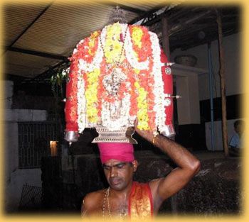

|
THE
ANNUAL JAATRE
|
||||||||||||
|
Every year, around the last week of December, the Nellitheertha temple conducts its annual Jaatre (festival). This is a grand five day event full of religious and cultural ceremonies. One thing that strikes a visitor to the Jaatre is the sheer number of rituals and ceremonies associated with this event. Though it may appear superstitious to the "non-believer", it is a fascinating experience. Simpy put, the Jaatre is the instrument the villagers use to express their gratitude and respect to the Gods and Bhootas. They offer their prayers to the Gods and Bhootas and seek their continued protection and pray for good rains and harvests year after year. The festival starts on the 14th day of the Shukla Paksha in Dhanur Maasa. Typically, this falls on the last week of December or the first week of January. The festival begins with a silver flag being hoisted to indicate the beginning of the Jaatre. This is called "Kodi" or "Dhwajaarohana" ceremony. Each of the four days has separate ceremonies like the "Balis" where the idol of the presiding deity is carried around the temple for a procession accompanied by music, the "Rudrabhishekas" where the Shiva Lingam is given a grand shower with 101 vessels of water and the "Rathotsava" where the deity is taken on a procession on the chariot. The climax of the festival is on the fourth day. Called the "Aarat" in local language, the ceremonies on this day mark the end of the festival. During the day, the presiding deity is taken on a procession in the Ratha or the chariot. Villagers offer their prayers during the procession. There is also an event called as the Pilchandi Bheti (meeting of Pili-Chamundi with the Lord) where the Bhoota offers its prayers to the Lord during the procession and seeks his blessings and vows to carry on the role of protecting Dharma in the region. The rituals are followed by a grand lunch for one and all. The food on this day is considered as God’s prasadam and no one leaves without having some. The rest of the ceremonies start late in the evening and goes on till dawn next day. The deity is taken on a procession and villagers offer "Katte Pooje" or "Platform Pooja" to the deity as it passes their residence. The deity is taken to the temple pond and is given a bath there. Devotees also take bath along with the deity as its considered extremely sacred to do so. On the return journey to the temple, again, several Katte Poojes are offered. Finally, the flag is brought down to indicate the closure of the festival. The next day, respect is offered to the Bhootas in the form of the Bhoota Kola. This is a dance ritual where a man assumes the role of a Bhoota and performs a set of rituals. It is believed that the Bhoota enters the body of the person during the Kola. Locals revere the ceremony a lot and the word of the person, performing the dance, during the kola is considered law. Even today, local disputes are settled during the Kola. The grandest of all Bhoota kolas is that of the "Pili Chamundi" Bhoota. It is a treat to the eyes what with the variety of colors on display. The kolas start early in the evening and continue till dawn the next day.
|
||||||||||||